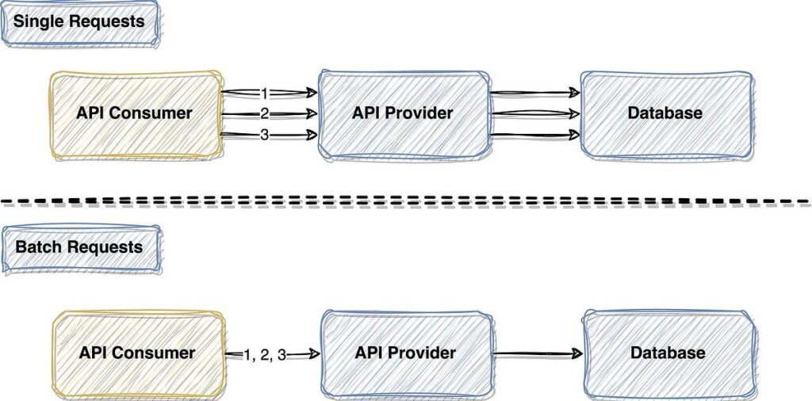

System Design Mastery
Master scalable systems with premium insights
🚨 API Works for 1K Users but Fails at 100K — What Will You Do?
👉 Interviewer asks:
Your API works
for 1K users but fails at 100K.
You cannot change infrastructure.
What will you
do?
🎯 Key Constraint:
Since I cannot change infrastructure — no new servers, no DB scaling changes, no re-architecture — my focus would be on reducing unnecessary load on the existing system.
My approach in three layers:
- Reduce repeated work
- Reduce number of requests
- Control incoming traffic
🔵 1. Reduce Repeated Work → Caching
📌 The first optimization I'd introduce is caching, especially if the system is read-heavy.
Cache:
- Hot GET responses
- Expensive queries
- Reference/static data
👉 Key idea:
Same response → avoid recomputing it every time
⚠️ I would explicitly mention:
- TTL tuning (not too long, not too short)
- Cache invalidation on writes
If traffic is read-heavy, caching alone can drastically reduce backend load.
🟢 2. Reduce Request Count → Batching
📌 The second issue at scale is not just heavy requests, but too many small requests.
So I would:
- Combine multiple reads into one request
- Introduce bulk APIs (fetch 100 items in 1 call)
- Batch writes asynchronously
- Deduplicate identical concurrent requests
👉 Example:
Instead of 100 API calls for 100 items, I'd serve it in one call.

Batching: Combining multiple requests into one
🚀 Impact:
- Fewer DB connections
- Lower network overhead
- Reduced thread contention
🔴 3. Control Traffic → Rate Limiting
📌 Even with optimizations, uncontrolled traffic can still break the system.
So I would add rate limiting at API level:
- Per-user / per-API key limits
- Stricter limits for expensive endpoints
- Return 429 (Too Many Requests) instead of failing internally
⚙️ Algorithms:
- Token bucket
- Sliding window
👉 Key idea:
Don't let the system crash — degrade gracefully.
📋 My Rate Limiting Priority:
I would first rate limit write-heavy and critical endpoints like bookings and payments, then expensive read operations like search, followed by authentication endpoints for security, and finally public or hotspot endpoints to handle traffic spikes.
I don't rate limit everything equally — I prioritize endpoints based on cost, risk, and impact on system stability.
🧠 4. Database Optimization
🔹 Indexing
✔ Faster queries
🔹 Query Optimization
- ✔ Avoid SELECT *
- ✔ Use joins properly
- ✔ Add pagination
🔹 Connection Pooling
✔ Reuse DB connections
💡 Final Thought
"Since I can't increase capacity, I focus on reducing demand."
So my strategy is:
- Caching → reduce repeated work
- Batching → reduce number of requests
- Rate limiting → control incoming load
- Database Optimization → faster queries
🚫 What You Should NOT Say
- ❌ Add load balancer
- ❌ Add more servers
- ❌ Use microservices
- ❌ Scale DB (Replication, Sharding, Partitioning, Vertical/Horizontal Scaling)
👉 Why?
Because infra change is NOT allowed
🧠 Interview Tips
- Respect the constraint — No infrastructure changes
- Show systematic approach — Caching → Batching → Rate Limiting
- Quantify impact — "Reduces DB calls by X%"
- Know what NOT to say — Avoid infrastructure solutions
- Graceful degradation — 429 instead of crashes